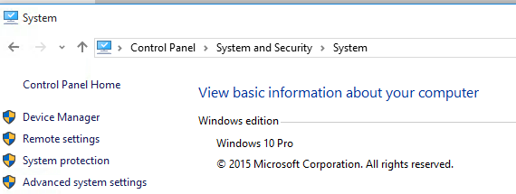
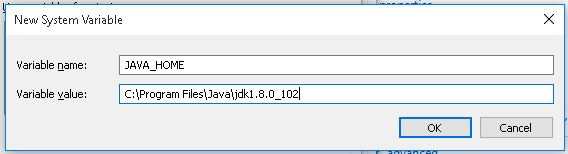
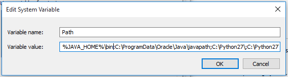
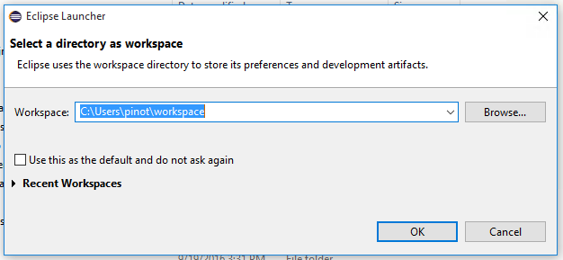
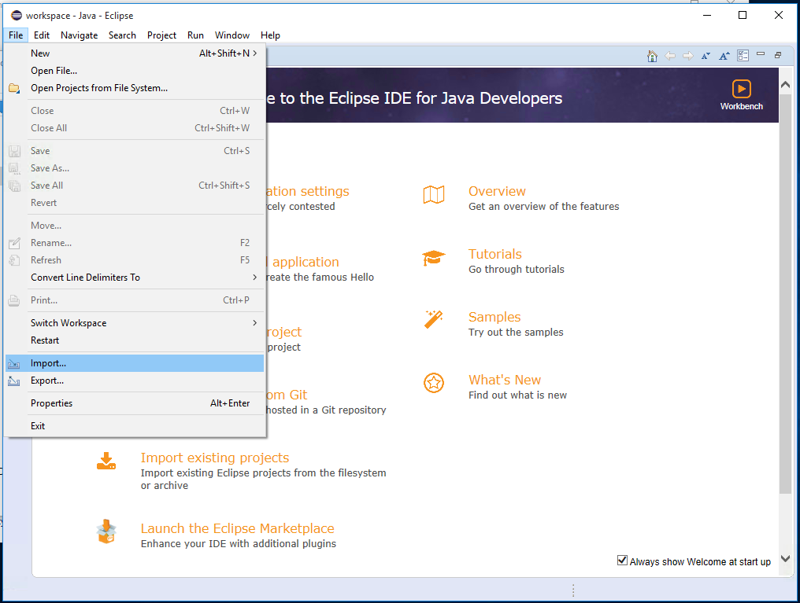
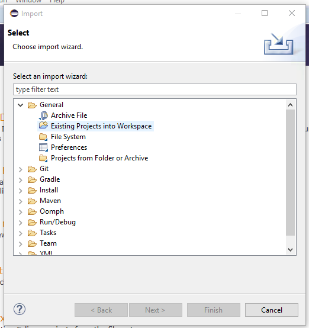
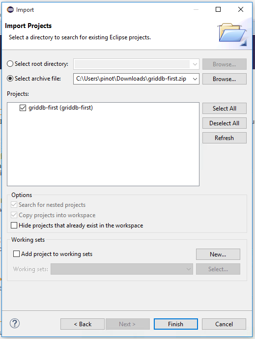
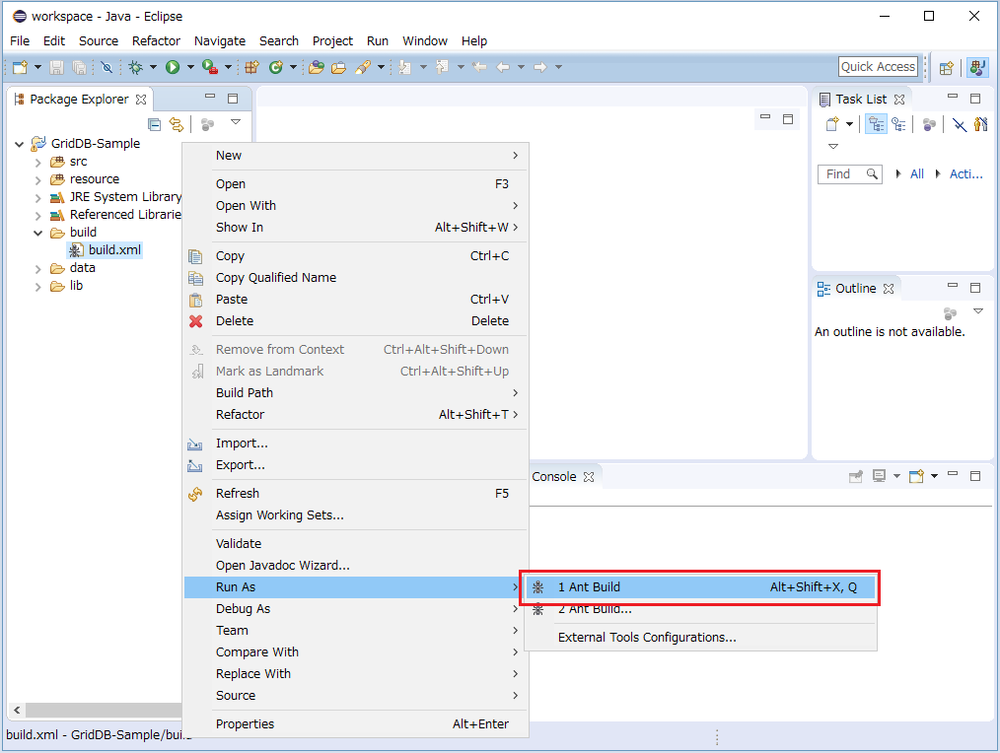
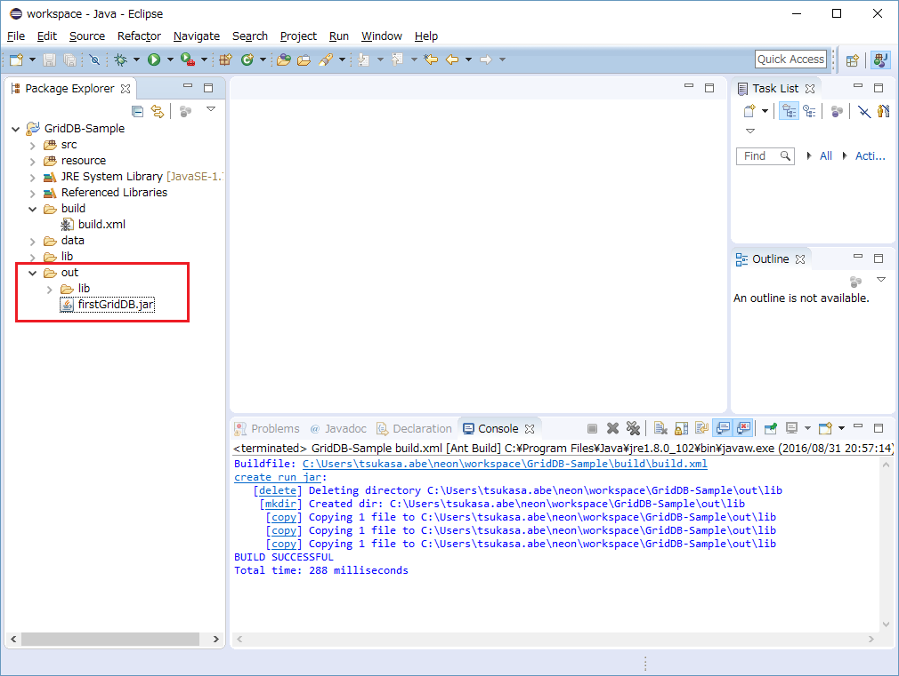

Table of Contents
5.1.4 Preparation: Environment (client)¶
Overview¶
This chapter shows the procedure to build an environment where you can build and execute GridDB Java applications. These instructions are specifically use Windows 10 (64 bit) as a development environment and CentOS 7.2 (64 bit) as an execution environment but can be adapted for other operating systems as well.
Obtaining the files¶
First download the following the files to your build environment, the tested versions and filenames are listed in Table 1.
Table 1 file available to
Software
Version
File name
Site to get
Java(Java SE Development Kit) (Windows)
8u102
jdk-8u101-windows-x64.exe
Java(Java SE Development Kit) (Linux)
8u102
jdk-8u101-linux-x64.rpm
Eclipse(Eclipse IDE for Java Developers)
Neon
eclipse-java-neon-R-win32-x86_64.zip
Construction of Build Environment¶
Java Installation¶
Table 1 there run the Java installer (jdk-8u102-windows-x64.exe), and install it. If you do not want to change the setting, it will be installed in C:\ Program Files \ Java \ jdk1.8.0_102.
Setting of environment variable¶
First set Java’s path in the Windows environment variable registry.Control Panel > system and security > system > Advanced System Settings and click , Open the properties of the system.
Figure 1 system Advanced
Click on the Advanced tab of environment variable (N) ... button.
 Figure 2 environment variable
Figure 2 environment variable
Add the following to the environment variable to the system environment variables:
- Variable name:
JAVA_HOME - Variable value:
C:\Program Files\Java\jdk1.8.0_102
Figure 3 Java environment variable
In addition, the system path must be changed by first selecting ‘Path’ in the list, clicking the ‘Edit’ button, and then then inserting “%JAVA_HOME%;” to the beginning of the text field.
Figure 4 Edit Path
After you change the above environment variables click the ‘OK’ button.
Install Eclipse¶
Follow Eclipse’s instructions on how to run the Eclipse. No specific options are required for GridDB development.
Import of source code¶
After Eclipse is installed you can start it and create a workspace in any location.
Download the source code for the first GridDB sample presented in GridDB Basics here: griddb_first.zip.
Figure 5 Creatde a Workspace
In the Eclipse Package Exploer click the ‘Import’ function:
6 project import of
Select General > Existing Projects and click the Next button.
7 import method selection
Select the Zip file that you downloaded and click the Finish button.
8 import method selection
Build of jar file¶
Use the Ant build.xml that will compile and generates a jar file.
In the Package Explorer build > to select build.xml to display the context menu, Click on the 1 Ant Build Run As >.
9 build run
If the build is successful, jar file in the folder out is output. When you click the Refresh in the context menu of the Package Explorer, It shows.
Figure 10 build success
Construction of execution environment¶
Then, in gshost that you created in the Environment (server)] (../ sample_app_prepare_server) Install the Java in order to run the sample application.
Installation of Java¶
Place Table 1 of Java of rpm files (jdk-8u101-linux-x64.rpm) to any location on the gshost, Please install the following procedure.
$ cd /tmp $ sudo rpm -Uvh /tmp/jdk-8u101-linux-x64.rpm $ sudo alternatives –config java
There are 2 programs which provide ‘java’.
Selection Command ----------------------------------------------- * + 1 /usr/lib/jvm/java-1.7.0-openjdk-1.7.0.111-2.6.7.2.el7_2.x86_64/jre/bin/java 2 /usr/java/jdk1.8.0_102/jre/bin/java
Press Enter to keep the current selection [+], or type the selection number you wish too use. In this case, we want to use 2 . Now java returns corresponds with the correct version.
$ java -version java version “1.8.0_102” Java (TM) SE Runtime Environment (build 1.8.0_102-b14) Java HotSpot (TM) 64-Bit Server VM (build 25.102-b14, mixed mode)
Placement of the jar file¶
Create a sample directory and copy the files from the built Eclipse project as follows:
sample / ├─lib … Directly copy the lib directory of the Eclipse project. │ gridstore-conf.jar │ gridstore.jar │ opencsv-3.8.jar ├─data … Directly copy the data directory in the Eclipse project. │ liveimage1.jpg │ liveimage2.jpg │ instrument_log.csv │ weather_station.csv └─ < jar file > … Copy the jar file from the output directory of the Eclipse project.
You can run the sample application as follows:
$ java -jar < jar file >